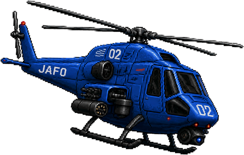
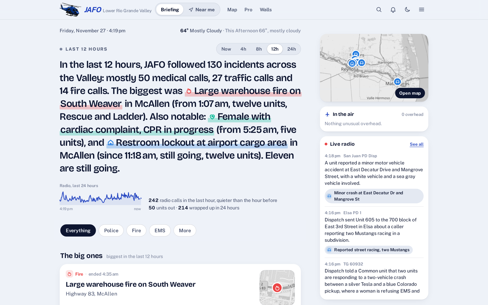
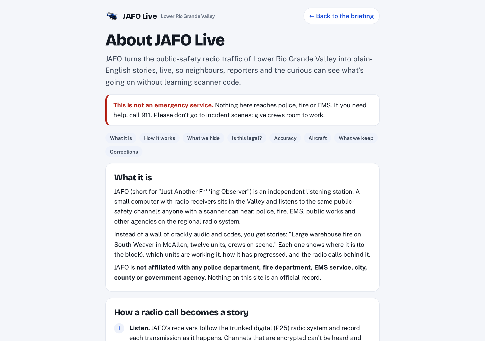
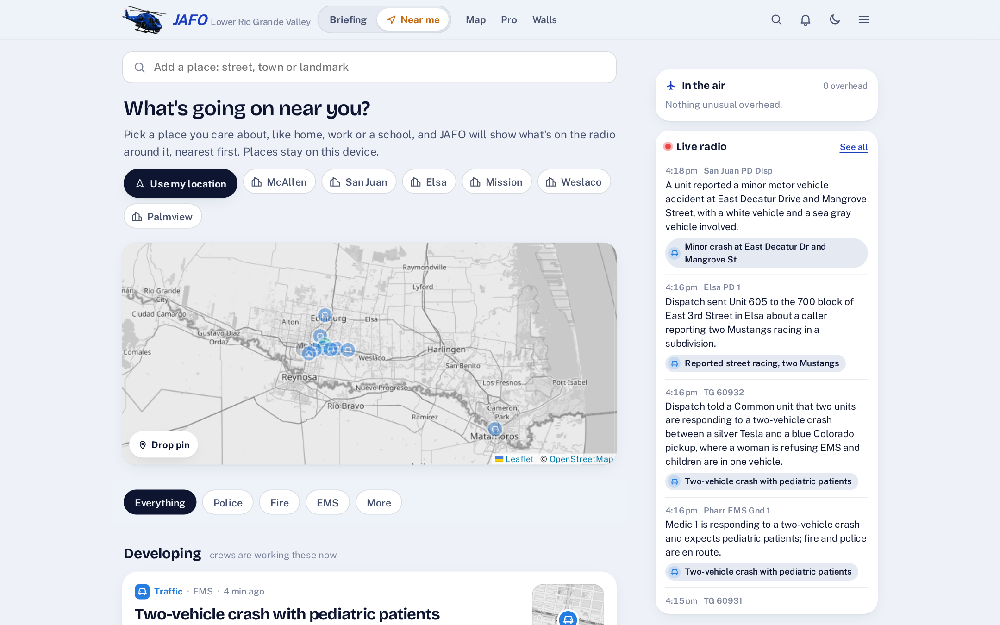
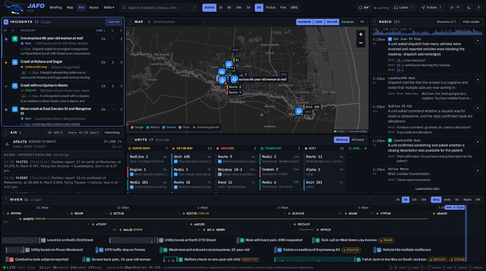
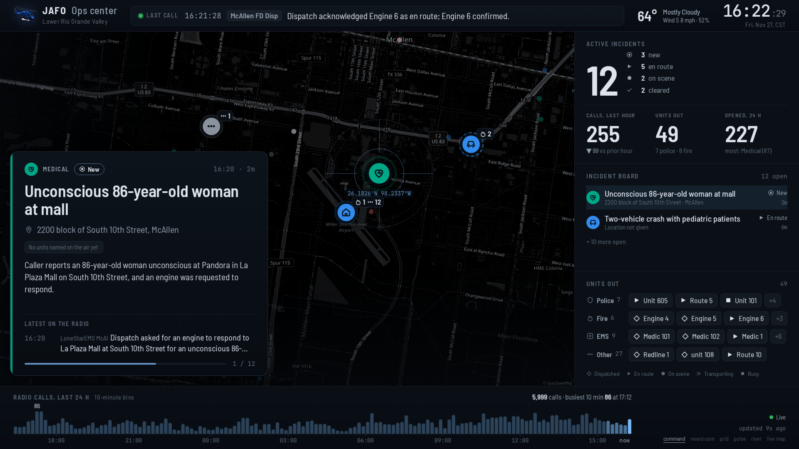
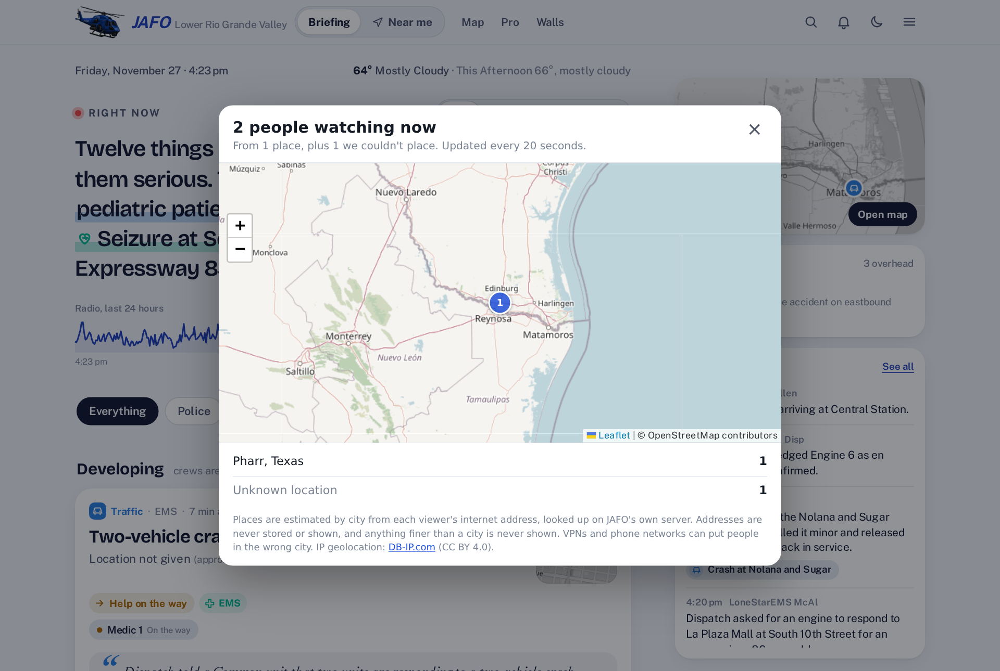
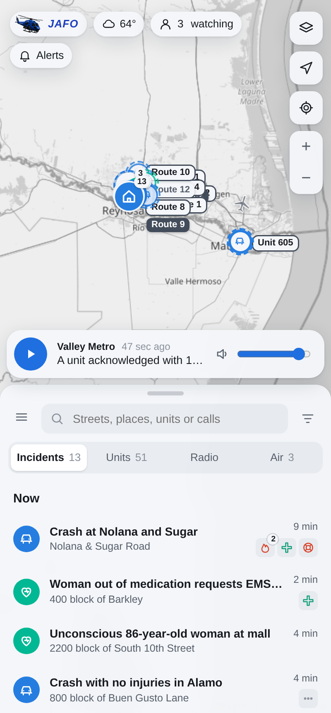
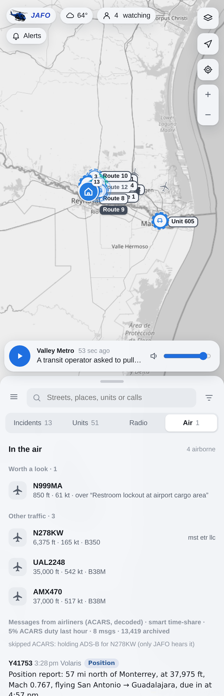
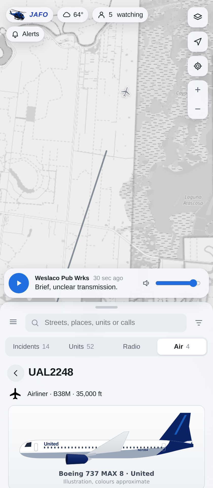

Every module has the same shape: what you'll do, the exact commands, what you should see, and a CHECKPOINT ✓ before you move on. GOTCHA boxes are the mistakes people actually make. Purple INSTRUCTOR boxes are notes for the teaching team; you can skip them.
| Module | What you'll do | Time |
|---|---|---|
| Day 1 · From photons to P25: a receiver you understand | ||
| M0 | Welcome, your kit, and the destination (jafo.live) | 15 min |
| M1 | Hardware tour + RF 101 | 25 min |
| M2 | How public-safety radio works: P25 & trunking | 30 min |
| M3 | Flash the Pi & first boot | 20 min |
| M4 | GNU Radio behind the scenes | 45 min |
| M5 | Decode P25 by hand with OP25 | 25 min |
| M6 | Wrap + bridge to Day 2 | 10 min |
| Day 2 · From receiver to observatory: build JAFO + join the fleet | ||
| M7 | Recap + the leap to a pipeline | 15 min |
| M8 | Install the JAFO stack: one command | 35 min |
| M9 | The brain: calls → incidents → units | 30 min |
| M10 | Privacy, ethics & the law | 15 min |
| M11 | Views + "many ears": the city and the sky | 35 min |
| M12 | Join the fleet + take it home | 25 min |
| Appendices · keep these | ||
| A | Bill of materials + upgrade paths | |
| B | Command cheat-sheet (every command, in order) | |
| C | Troubleshooting | |
| D | Glossary | |
| E | Running one at home | |
| F | Privacy & legal quick reference | |
Commands go in dark boxes; type them on the Pi over SSH unless the box says "laptop". Lines starting with # are comments. Words in <ANGLE BRACKETS> are placeholders: the instructor gives you the real value (for example the Phoenix system's control channels). Light grey boxes show the output you should expect.
Over the next two afternoons you're going to build a JAFO: a Raspberry Pi that quietly listens to the local public-safety radio system and the sky above it, turns what it hears into plain-English incidents, and reports to jafo.live. You'll leave with the working device, the kit, and an understanding of how every piece fits together.
We build it the hard way first, then let JAFO automate it:
Open https://jafo.live on your phone or laptop now. It lands on the Briefing for the Rio Grande Valley, where the reference node lives. Everything on this page was written by the pipeline you're about to build: radio calls were recorded, transcribed, read by Claude, grouped into incidents, and summarized.

Try three things: switch the recap between Now / 4h / 8h / 12h / 24h; tap one of The big ones to open its story (units, timeline, the calls behind it); and tap Map. Don't worry about how yet. That's Day 2.
Your laptop with Raspberry Pi Imager, an SSH client, and an X11 server for Module 4 (macOS: XQuartz; Windows: WSL with WSLg, or VcXsrv; Linux: nothing extra). Free Groq and Anthropic accounts, which you'll use on Day 2.
Before you plug anything in, name the parts and build a mental model of how a radio signal becomes data on a screen.
| Device | Its job |
|---|---|
| Raspberry Pi 5 | The computer. Runs the decoder, the capture pipeline and the local dashboard. Heavy AI runs on the hub, so the Pi stays light. |
| RTL-SDR #1 | The city. Parked on the P25 public-safety system (700/800 MHz) all the time. |
| RTL-SDR #2 | The sky. Takes turns between ADS-B (aircraft positions, 1090 MHz) and ACARS (airline text messages, ~131 MHz). A smart time-share decides when to switch. |
| Dipole antenna | Catches the radio waves. The whips telescope because the right length depends on the frequency you want to hear. |
| Powered USB hub | Feeds the SDRs clean power. Two SDRs pull more than the Pi can safely supply on its own. This is non-negotiable. |
| 27 W PSU + active cooler | The Pi 5 is power-hungry and runs hot under P25 decode. Off-brand supplies cause brownouts; no fan means throttling. |
An SDR (software-defined radio) has no fixed purpose. It tunes to a slice of spectrum and streams raw digitized samples over USB; software decides what it "is". Same dongle, three jobs.
Each arm of a dipole should be about a quarter wavelength (λ/4). Measure from the base:
| Band | Frequency | λ/4 per arm | Used for |
|---|---|---|---|
| P25 (800 MHz) | ~851–860 MHz | ≈ 8.7 cm | SDR #1, the city |
| ADS-B | 1090 MHz | ≈ 6.9 cm | SDR #2, most of the time |
| ACARS | ~131.55 MHz | ≈ 57 cm (full extension is close) | SDR #2, short windows |
One antenna can't be perfect for both 1090 and 131 MHz. Set SDR #2 for ADS-B; ACARS from airliners overhead is strong enough to land anyway.
Everything we do for the next two days is making that chain work and then adding intelligence at the end of it. Keep the chain in your head and nothing will feel like magic.
P25 decode alone keeps most of a CPU core busy. Our production Pi runs at 72–78 °C with a cooler, and it starts slowing itself down in the 80s. Without the active cooler it throttles within minutes and drops calls. Clip the fan on now, and keep cases open and off tablecloths.
To listen to a modern public-safety system you have to understand one idea: trunking. Get this and the rest of the workshop clicks.
Old radio was analog FM: one agency, one fixed frequency, tune in and listen. Modern US public safety runs P25 (APCO Project 25), a digital standard. The voice is encoded as data, which is why an old analog scanner can't just "tune it in".
Instead of giving every agency its own permanent frequency, a trunked system pools a handful of channels and hands them out on demand. A dedicated control channel runs non-stop, directing every radio: "Talkgroup 7-Fire, your call is on 851.2625, go." The radios retune instantly; users never notice.
| Term | Meaning |
|---|---|
| Control channel | The always-on data channel that assigns calls. Find this and you can follow everything. |
| Voice grant | A message on the control channel: "this talkgroup → this frequency, now." |
| Talkgroup | A virtual channel for a group (e.g. "McAllen Fire Dispatch"), identified by a number. |
| Site | One tower location. A system has many; each has its own control channel(s). |
| System IDs | WACN + System ID + NAC: the fingerprints that identify which system and site you're hearing. |
You can't just park on a voice frequency; calls hop around. You have to decode the control channel, read the voice grants, and retune to follow each call. That's exactly what OP25 (today) and trunk-recorder inside JAFO (tomorrow) do for you.
Agencies can encrypt talkgroups. Encrypted traffic shows up as grants with an "encrypted" flag, and the audio is noise. Many cities encrypt some police tactical channels while dispatch, fire and EMS stay in the clear; some encrypt everything. We never try to decrypt anything, and JAFO drops encrypted calls before they're stored. Module 10 explains why that line matters legally.
radioreference.com is the community database of radio systems. For a trunked system you'll find the System ID, WACN and NAC, the sites with their frequencies (control channels are flagged with a c), and the full talkgroup list with each talkgroup's mode (D = digital clear, DE = digital encrypted). On Day 1 you point your receiver at a control channel by hand; on Day 2 JAFO pulls all of this automatically.
| System name | |
| System ID · WACN | |
| Nearest site + NAC | |
| Control channels (MHz) | |
| Phase 1 or Phase 2? Modulation? | |
| Three talkgroups in the clear |
You can point at the control channels on the system page, explain what a voice grant is, and say which talkgroups you expect to hear (clear) and which you won't (encrypted).
Time to bring the Pi to life: headless (no monitor), driven entirely from your laptop over SSH.
In Raspberry Pi Imager (on your laptop): choose device Raspberry Pi 5, OS Raspberry Pi OS Lite (64-bit). Before writing, open Edit Settings (the OS customisation screen) and set:
jafopi + a password you'll remember (JAFO's services assume the user is pi)USWrite the card, put it in the Pi, connect both SDRs and the antenna to the powered hub, plug the hub into a blue USB 3.0 port, then apply power. First boot takes 1–2 minutes.
JAFO's installer was written for Pi OS Bookworm. Confirm the Imager's current default still works with bootstrap.sh, or tell students to pick Bookworm under "Raspberry Pi OS (other)".
ssh pi@jafo.local # if .local doesn't resolve, use the IP from the workshop network list: # ssh pi@192.168.x.x
In a room full of identical hostnames, jafo.local may reach your neighbour's Pi. Use the hostname on your seat label (e.g. jafo-07) when imaging, and substitute it everywhere this guide says jafo.local.
sudo apt update && sudo apt full-upgrade -y sudo apt install -y git cmake build-essential libusb-1.0-0-dev pkg-config tmux
tmux keeps long jobs running if your SSH session drops. Start one now with tmux new -s jafo; reattach later with tmux attach -t jafo.
The RTL-SDR Blog V4 uses a different tuner chip (R828D) and won't work with older stock librtlsdr packages. Install the rtl-sdr-blog driver fork below, or you'll see no device or all-zero samples.
sudo apt purge -y ^librtlsdr cd ~ && git clone https://github.com/rtlsdrblog/rtl-sdr-blog cd rtl-sdr-blog && mkdir build && cd build cmake ../ -DINSTALL_UDEV_RULES=ON make -j4 && sudo make install sudo cp ../rtl-sdr.rules /etc/udev/rules.d/ sudo ldconfig
Linux thinks the dongle is a TV tuner and grabs it first. Tell it not to:
echo 'blacklist dvb_usb_rtl28xxu' | sudo tee /etc/modprobe.d/blacklist-dvb.conf sudo reboot
SSH back in after the reboot and run:
rtl_test -t
You see two devices (index 0 and 1), each reporting an R828D tuner, and no "device not found" errors. If you only see one, move it to another port on the powered hub and re-run.
Index 0 and 1 can swap on every boot. Serial numbers don't. JAFO's ADS-B installer looks for the sky dongle by serial 00000001, so set that now. Unplug SDR #1 (city) from the hub so only the sky dongle is connected, then:
rtl_eeprom -d 0 -s 00000001 # sky dongle → serial 00000001 (answer y) # unplug it, plug in ONLY the city dongle, then: rtl_eeprom -d 0 -s 00000025 # city (P25) dongle → serial 00000025 # plug both back in, then: rtl_test -t # lists both, with their serials
Put a "SKY 01" label on one dongle and "P25 25" on the other. From now on software asks for a dongle by serial (rtl=00000025), so it always gets the right one.
vcgencmd measure_temp # e.g. temp=48.3'C vcgencmd get_throttled # want throttled=0x0
Both dongles detected with serials 00000001 and 00000025, temperature under 60 °C at idle, throttled=0x0. You're ready for GNU Radio.
GNU Radio is the toolkit underneath almost every SDR decoder, including OP25 and trunk-recorder. You'll install it, see the spectrum, learn the handful of settings every SDR program asks for, and build a working FM receiver from blocks.
OP25 (Module 5) compiles for 15–25 minutes. Start it in a second tmux window so it's done when you need it. Press Ctrl-b then c for a new window:
cd ~ && git clone https://github.com/boatbod/op25 cd op25 && ./install.sh
Switch back to your first window with Ctrl-b then 0 and carry on. The OP25 installer also pulls in GNU Radio, so the next step may find it already installed.
Check boatbod/op25's current README: the default branch, whether ./install.sh is still the entry point on the Pi OS release you're using, and its GNU Radio version. Have a pre-built image ready for anyone whose build fails.
sudo apt install -y gnuradio gr-osmosdr xauth gnuradio-config-info --version
3.10.x
gr-osmosdr depends on the distro's librtlsdr. After installing it, run rtl_test -t again. If the V4 now reports "No supported tuner" or the wrong tuner, reinstall the blog driver: cd ~/rtl-sdr-blog/build && sudo make install && sudo ldconfig.
Confirm on the workshop image which librtlsdr.so.0 wins after apt installs gr-osmosdr (ldconfig -p | grep rtlsdr), and that both GRC and trunk-recorder see the V4 as R828D. The JAFO installer (Day 2) also apt-installs rtl-sdr librtlsdr-dev.
The Pi has no monitor, so you'll forward GRC's window to your laptop over SSH (X11). Start your X server first (XQuartz on macOS), then from your laptop:
ssh -Y pi@jafo.local gnuradio-companion &
A window titled GNU Radio Companion opens on your laptop. It's a little slow over Wi-Fi; that's normal.
If X forwarding is too slow on venue Wi-Fi, students can run GRC on their laptop (radioconda) with the sky dongle plugged into the laptop for this module only. The flowgraphs are identical.
Build this with blocks from the right-hand list (search with Ctrl-F), then wire output to input:
| Setting | Value | Why |
|---|---|---|
Variable samp_rate | 2.4e6 | The RTL-SDR's comfortable maximum: 2.4 MHz of spectrum at once. |
| osmocom Source: Device Arguments | "rtl=00000001" | Pick the dongle by serial (the sky dongle). |
| Ch0: Frequency (Hz) | an FM station, e.g. 98.7e6 | Broadcast FM is strong indoors, a good first target. |
| Ch0: Freq. Corr. (ppm) | 0 | The V4 has a TCXO; older dongles need a few ppm. |
| Ch0: RF Gain (dB) | 30 | Start mid-range; adjust while watching the noise floor. |
| Sinks: Center freq / Bandwidth | 98.7e6 / samp_rate | So the x-axis reads in real MHz. |
Click Run (the play button). Generate Options must be QT GUI.
A live spectrum with tall humps (FM stations, ~200 kHz wide) and a scrolling waterfall. Change the RF gain: watch the noise floor rise and fall. Retune to 1090e6 on the sky antenna and look for brief vertical spikes: those are aircraft ADS-B bursts.
| Knob | What it means | Where you'll see it again |
|---|---|---|
| Device args | Which radio, which driver: rtl=0, rtl=00000025, airspy | OP25 --args, trunk-recorder "device" |
| Sample rate | How many MHz you see at once | trunk-recorder "rate"; must be a multiple of 24,000 with osmosdr RTL/HackRF sources |
| Center frequency | The middle of that window | trunk-recorder "center"; every channel you want must fit inside center ± rate/2 |
| Gain | Amplification (one stage on RTL, three on HackRF/Airspy) | trunk-recorder "gain", OP25 -N |
| PPM correction | Fixes the dongle's clock error | trunk-recorder "error", OP25 -q |
Save Flowgraph 1, then File → Save As fm_rx.grc and replace the sinks with a demodulator chain. The Pi has no speaker, so you'll record to a WAV file and play it on your laptop.
| Block | Settings |
|---|---|
| Low Pass Filter | Decimation 10 (2.4 MS/s → 240 kS/s), Cutoff 100e3, Transition width 10e3 |
| WBFM Receive | Quadrature Rate 240e3, Audio Decimation 5 (→ 48 kHz audio) |
| Multiply Const | Constant 0.5 (keeps the audio from clipping) |
| Wav File Sink | File /home/pi/fm.wav, Channels 1, Sample rate 48000 |
Run it for about 20 seconds, stop it, then copy the file to your laptop and play it:
scp pi@jafo.local:~/fm.wav . # run on your laptop
You hear the station clearly. You just built a radio out of blocks: filter, demodulate, resample, output. OP25 is the same idea with a P25 demodulator and a trunking brain bolted on.
Swap WBFM Receive for NBFM Receive, tune to your NOAA Weather Radio channel (162.400–162.550 MHz; the instructor has Phoenix's) and set the low-pass cutoff to 8e3. Narrowband FM is what most land-mobile analog radio uses.
Only one program can open an SDR at a time. Stop GRC (and close its window) before you start OP25, or OP25 will report the device as busy.
OP25 is a GNU-Radio-based P25 decoder. You'll point it at the venue system's control channel and watch it trunk-track: read the grants and follow the calls. This is "receiving P25 using GNU Radio".
Switch to the tmux window where ./install.sh was running. It should end without errors. Then go to OP25's apps folder:
cd ~/op25/op25/gr-op25_repeater/apps ls rx.py
OP25 reads a tab-separated file describing the system. Use the control channels from your Module 2 worksheet (the instructor projects the exact values). Create phx.tsv:
nano phx.tsv
"Sysname" "Control Channel List" "Offset" "NAC" "Modulation" "TGID Tags File" "Whitelist" "Blacklist" "Center Frequency" "PHX" "<CC1>,<CC2>" "0" "0" "<C4FM or CQPSK>" "phx-tg.tsv" "" "" ""
The fields are separated by tabs, not spaces. Control channels go in MHz (e.g. 851.0125). NAC 0 means "accept whatever you hear". Then create a talkgroup name file, phx-tg.tsv, one line per talkgroup: number, tab, name. Three or four lines from your worksheet are enough.
./rx.py --args 'rtl=00000025' -N 'LNA:40' -S 2400000 -q 0 \ -T phx.tsv -2 -V -U -l http:0.0.0.0:8080 2> stderr.log
| Flag | Meaning |
|---|---|
--args 'rtl=00000025' | Use the P25 (city) dongle, by serial |
-N 'LNA:40' · -S 2400000 · -q 0 | Gain, sample rate, ppm correction (the Module 4 knobs) |
-T phx.tsv | Follow the trunked system described in your config |
-2 · -V · -U | Decode Phase 2 TDMA · enable the voice codec · play audio over UDP |
-l http:0.0.0.0:8080 | Serve OP25's status page on port 8080 |
Open http://jafo.local:8080 in your laptop's browser.
Confirm these rx.py flags and the TSV column layout against the boatbod version you install (newer releases also offer multi_rx.py with JSON configs). Confirm Phase 1/2 and C4FM/CQPSK for the Phoenix target. Bring a recorded IQ file and the matching command for RF-dead seats.
A single RTL-SDR sees 2.4 MHz. OP25 retunes the dongle to each voice channel, so it can follow one call at a time. JAFO's trunk-recorder (Day 2) instead records several calls at once, but only those whose frequencies fall inside its window. That's why production nodes use a wide SDR (Airspy R2, 10 MHz).
OP25 shows the right WACN/System ID, a steady tsbk rate, and grants for real talkgroups. You built a P25 receiver by hand. Stop it with Ctrl-C when the instructor moves on.
You have a P25 receiver you understand. Tomorrow you turn it into a product: something that runs unattended, makes sense of what it hears, and shares it.
| Today (by hand) | Tomorrow (JAFO) |
|---|---|
| You typed the control channels | JAFO finds its location and picks a receivable site itself |
| OP25 follows one call at a time | trunk-recorder records every call in its window, in parallel |
| You listened | Speech-to-text writes it down; Claude turns calls into incidents and units |
| Your screen only | jafo.local on your network, and your city on jafo.live |
sudo poweroff before unpluggingjafo.live/live/rgv/about (what JAFO hides and why listening is legal)A from-source JAFO install (trunk-recorder build included) takes 25–35 minutes, which is most of M8. Either hand out pre-built cards with the stack installed, or have students who keep their Pi on the venue network start bootstrap.sh in tmux now (Module 8, step 1).
Yesterday you had a decoder. Today you build a system: something that records every call, throws away the junk, writes down what was said, works out what it means, and shows it to people, unattended, for months.
| Service | What it does |
|---|---|
jafo-recorder | Runs trunk-recorder: decodes the control channel and records each voice call in its window to a WAV + JSON sidecar. |
jafo-processor | Runs Silero VAD (voice activity detection) and drops encrypted, too-short and silent calls (most of what's recorded), then encodes survivors to Ogg Opus and adds a row to SQLite. |
jafo-transcriber | Sends each kept call to Groq's whisper-large-v3-turbo and writes the transcript back. Handles English and Spanish. |
jafo-enricher | The AI step. On a fleet node it runs on the hub, where it can see every call in the region (Module 9). |
jafo-web | Flask behind nginx: the local dashboard at http://jafo.local. |
jafo-uploader | Pushes kept, transcribed calls (audio + metadata) to jafo.live. |
| Your Pi (the edge) | jafo.live (the hub) | |
|---|---|---|
| Job | Capture, filter, transcribe, upload | Incidents, units, maps, recaps, alerts, public views |
| Keeps | The last 4 hours (JAFO_DEVICE_RETENTION_HOURS=4) | The system of record: recordings 14 days, stories longer |
| Why | Stays cool and light; a cheap microSD lasts | Sees every node in a region, so it can link calls into one picture |
Everything lives in one SQLite database. Each service polls for "rows where my column is still empty", does its job and fills it in. The database is the queue: crash any service and it picks up where it left off.
Each stage is small, boring and restartable. When something breaks you ask one question: "which column stopped filling in?", and that tells you which service to look at.
One script installs everything. A second tool works out where it is, picks a radio site it can actually hear, names the talkgroups and registers your node. You'll watch each step so you know what it did.
tmux new -s install curl -fsSL https://raw.githubusercontent.com/Drew-CodeRGV/jafo/main/bootstrap.sh | bash
bootstrap.sh clones the repo to ~/jafo, creates ~/jafo/.env, then hands off to pi/install-pi.sh, which:
pi/tools/detect-sdrs.sh) and picks a profile~/jafo-data/, the Python venvs and the nginx sitejafo-recorder, jafo-processor, jafo-transcriber, jafo-enricher, jafo-web jafo install complete.
Profile: rtl-only
Services:
jafo-recorder inactive
jafo-processor active
...
Seeing rtl-only with the recorder inactive is expected for this kit. The stock profiles assume a wide SDR for voice; you install the workshop's RTL profile in step 3.
The installer apt-installs rtl-sdr and librtlsdr-dev. Run rtl_test -t. If either dongle stops showing R828D, reinstall the blog driver as in Module 4.
nano ~/jafo/.env
GROQ_API_KEY=gsk_... ANTHROPIC_API_KEY=sk-ant-... JAFO_HUB_URL=https://jafo.live JAFO_PROVISION_TOKEN=<from the instructor> JAFO_OWNER_EMAIL=you@example.com JAFO_DEVICE_RETENTION_HOURS=4 JAFO_TIMESHARE=45:10 JAFO_TIMESHARE_SMART=1 JAFO_REGION="Phoenix, Maricopa County, Arizona"
JAFO_REGION=Phoenix, Maricopa County (no quotes) breaks the installer with an error like Maricopa: command not found. Always quote such values. .env is git-ignored; never paste your keys anywhere else.
trunk-recorder's settings live in ~/jafo-data/config/config.json, copied from a profile in ~/jafo/config/profiles/. Install the profile the instructor gives you for one RTL-SDR on the Phoenix system:
cp ~/jafo/config/profiles/<WORKSHOP-PROFILE>.json ~/jafo-data/config/config.json echo <WORKSHOP-PROFILE> > ~/jafo-data/config/.active-profile grep -E '"(device|center|rate|gain)"' ~/jafo-data/config/config.json
Read the output against Module 4's knob table: "device": "rtl=00000025" (the city dongle), a center and a rate of 2400000 (a multiple of 24,000, as trunk-recorder requires). Every control and voice channel JAFO can record must sit inside center ± 1.2 MHz.
The repo has no single-RTL P25 profile today: detect-sdrs.sh reports rtl-only for two RTLs and install-pi.sh treats that as "can't capture". Add a profile (one RTL by serial 00000025, 2.4 MS/s, center chosen so the Phoenix site's control channel and as many voice channels as possible fit) and test it with the venue's RF and the IQ fallback.
JAFO looks for cached RadioReference data first: a sites file and a talkgroups file for the system ID (SID). The instructor has pre-cached Phoenix's, so nobody needs a RadioReference login today:
mkdir -p ~/jafo-data/config/rr-cache cp <instructor share>/sites-<SID>.csv <instructor share>/tg-<SID>.csv ~/jafo-data/config/rr-cache/
python3 ~/jafo/pi/tools/relocate.py --sid <SID> --dry-run
• Detecting location …
→ Phoenix, Arizona (33.4xx,-112.0xx) via AS...
──────── RELOCATION PLAN ────────
System : Phoenix P25 (geo-derived)
Site : <site name> NAC <nac> (<n>km)
Control ch : <cc1>, <cc2> MHz
Hub node : jafo-phoenix-01 · region phoenix
Talkgroups : yes (<n> rows)
Already current: no
─────────────────────────────────
(dry-run) no changes.
What it just did, in order:
Venue and hotel networks often geolocate to another city. That's why you pass --sid: the cached system data decides the radio side even when the IP lookup is off. Check the distance on the Site line looks sane.
python3 ~/jafo/pi/tools/relocate.py --sid <SID> --yes
Now it also self-provisions a node and region on jafo.live (using your provision token), installs the talkgroups, patches config.json, writes JAFO_NODE_SLUG, JAFO_NODE_TOKEN, the map centre and system label into .env (backing up each file first), restarts the recorder and web, and waits ~35 s to verify the decode:
✓ System ID <sysid> WACN <wacn> NAC <nac> — WACN matches.
✓ Relocated to <region> as <node-slug>.
For a location outside its registry, relocate.py names the node jafo-<city>-01, so every Pi in the room would claim the same hub node (and the last one would hold the token). Before the workshop, add per-seat slugs (a registry entry or a new flag) and test provisioning 24 nodes against the hub.
sudo systemctl status 'jafo-*' --no-pager sudo journalctl -u jafo-recorder -f # Ctrl-C to stop watching ~/jafo-data/venv-services/bin/python ~/jafo/pi/services/stats.py ~/jafo/pi/tools/check-sdrs.sh # ✓/✗ for drivers, USB power, conflicts
In the recorder log, look for the control-channel decode rate and lines naming talkgroups as calls start and end. stats.py shows how many calls were kept, skipped (and why), and transcribed.
Now open http://jafo.local (your hostname) in a browser.
The recorder log shows a steady decode on the expected WACN; stats.py shows kept calls; the dashboard at jafo.local lists calls with talkgroup names and transcripts arriving within a few seconds.
A transcript isn't news. "Medic 3 en route, 10-4" means nothing on its own. It means something next to the call three minutes earlier that dispatched Medic 3 to a fall on Nolana. This module is about the step that puts calls next to each other.
The brain runs on jafo.live, so first turn on the uploader. It promotes jafo-uploader to a systemd service and starts it:
sudo bash ~/jafo/scripts/install-uploader-systemd.sh sudo journalctl -u jafo-uploader -f
Each kept, transcribed call is POSTed to the hub with its audio, using the JAFO_NODE_SLUG and JAFO_NODE_TOKEN that relocate.py wrote into .env.
jafo-transcriber sends each kept Opus file to Groq's whisper-large-v3-turbo, which takes about a second. Watch it:
sudo journalctl -u jafo-transcriber -f
Radio audio is clipped and full of jargon, so expect misheard street names and unit numbers. The next step fixes some of that using region context.
For every transcribed call, the hub sends Claude Haiku 5.5 the transcript plus the incidents currently open in the region (up to 14, from the last 90 minutes), the units recently heard, and a short description of the region's cities and streets. Claude answers with one structured JSON object:
| Field | What Claude decides |
|---|---|
call_line | One plain-English sentence, codes translated: "Dispatch sent Medic 3 to a fall with neck pain." |
incident | attach to an open incident, start a new one, or none (chatter, records checks, tests) |
units | Each callsign heard, its role ("Ambulance", "McAllen patrol") and the status this call implies |
location | House number, street, cross street, place, city, used to place a block-level pin |
codes | Radio codes heard, with a short meaning ("10-97" → "Arrived on scene"), only when confident |
redact | Exact private substrings to hide: civilian names, house numbers, phones, plates, DOBs |
kind · severity · sensitive | Category, how serious, and whether it involves self-harm, mental health, a death, sexual assault or child abuse |
The code is short and readable. On your Pi:
less ~/jafo/pi/services/incidents.py # the prompt (SYSTEM_TEMPLATE), schema, linking, sweeper
grep -n "UNIT_STATUSES\|QUIET_CLOSE_SEC\|CANDIDATE_WINDOW" ~/jafo/pi/services/incidents.py
Every unit carries a status, updated by each call it appears in. The incident's timeline is the first time each stage was reached:
Radio is messy (a transport can be heard before "on scene"), so the timeline is shown in canonical order. An incident closes 45 minutes after its last call, or 10 minutes after every unit has cleared.
The Briefing's "The big ones" ranks incidents by an importance score (from pi/web/live.py, _importance). It's never shown as a number:
| Ingredient | How it counts |
|---|---|
| Severity | critical 40 · high 25 · medium 10 · low 3 |
| Units | +4 per unit, up to 12 units |
| Radio volume | +1.5 per call, up to 20 calls |
| Special resources | +8 each: hazmat, air, SWAT, rescue, medical examiner, ladder, DPS, K9 |
| Duration | +1 per 6 minutes, up to 2 hours |
http://jafo.local, pick a call with a clear transcript and note its time and talkgroup./live/<your-region>/pro (the Console's Radio pane), and read its call_line.Its thinking tokens count toward max_tokens. JAFO keeps effort low, sets a generous max_tokens (6000), asks for structured output against a JSON schema, and reads the response's content blocks by type. Copy those choices if you build on it.
Set JAFO_LLM_BACKEND=anthropic in .env, then sudo systemctl restart jafo-enricher and sudo journalctl -u jafo-enricher -f. The same v2 loop runs locally, using your Anthropic key. It costs a few cents an hour on a busy system and adds CPU and heat, so turn it back off after the workshop.
Confirm that local v2 enrichment on an edge Pi (no regions row) produces sensible incidents, and that jafo.live shows a newly provisioned region's incidents in the views students will open.
You can point to an incident built from your node's calls, name its units and their statuses, and explain why each call was attached (or not).
Listening is the easy part, legally. Publishing is where your duties start. People on these calls are having the worst day of their lives, and none of them agreed to be on a website. JAFO is built so the public picture shows what is happening, not who it is happening to.
| Layer | What it does |
|---|---|
| 1 · The AI's redact list | For every call Claude lists exact substrings to hide: civilian names, house and apartment numbers, phone numbers, plates, dates of birth, ID numbers, case numbers tied to a person. They're blurred in public transcripts. Officer callsigns, businesses and block-level streets stay. |
| 2 · A regex scrub | A second, dumb-but-reliable pass (_redact_pii in pi/web/app.py) catches phone numbers, SSNs and plates, and turns "1234 Main St" into "the 1200 block of Main St", in case the model missed one. |
| Block-level locations | The house number is used to place the pin and then thrown away: it is never stored on an incident. Public locations read "1200 block of Main St" or "Main & 5th". |
| Sensitive calls | Self-harm, mental-health crises, deaths, sexual assault and child abuse are flagged sensitive and softened on wall displays (the screens in offices and newsrooms). The full detail stays on /live. |
| Encrypted channels | Never touched. trunk-recorder and the processor drop them; nothing is decrypted, stored or guessed at. |
Redaction applies to text. If a dispatcher reads out a name, it's in the recording. That's why public playback is a deliberate switch on the hub (JAFO_PUBLIC_AUDIO=1) and why the hub keeps recordings for a limited time. Think hard before you turn on public audio for your own node.
Federal law sets the floor, but states add their own rules: some restrict scanners in vehicles, some treat publishing differently. Before you run a public node, look up your own state's interception and scanner laws. This section is a plain-language summary, not legal advice.
Open jafo.live/live/rgv/about. It's the public version of this module: what JAFO is, how a call becomes a story, what is hidden, why listening is legal, accuracy limits, aircraft, how long things are kept, and how to report a problem.

Explain to your neighbour, in two sentences each: what JAFO hides and how; why listening to clear P25 is lawful and encrypted traffic isn't; and why the audio is the riskiest thing you could publish.
One incident model, many ways to look at it. Then you'll put SDR #2 to work on the sky.
<region> with yours, or use rgv)| View | URL | What it's for |
|---|---|---|
| Briefing | /live/<region> | The front door. A written recap (Now / 4h / 8h / 12h / 24h), "The big ones", live radio in plain English. |
| Near me | /live/<region>?lens=near | Pick home, work or a school; see what's on the radio around it, nearest first. Places stay on your device. |
| Map | /live/<region>/map | Full-screen map: incidents, units, radio, aircraft; alerts and layers. |
| Console | /live/<region>/pro | The pro view: incidents, map, units by status, radio, air and the River timeline in panes. |
| Wall displays | /live/<region>/wall/command | Big screens: command, newsroom, grid, pulse, river. Sensitive calls are softened. |
| About | /live/<region>/about | Sources, privacy, legality, accuracy, corrections (Module 10). |


/pro): incidents, map, units by status (dispatched, on the way, on scene, transporting, busy), radio, air with ACARS, and the River timeline along the bottom, with aircraft in the sky lane above incidents.
command wall: one incident at a time, the incident board, units out by service, and radio volume over 24 hours.
ADS-B (1090 MHz) is aircraft broadcasting their own position, altitude and speed every second. ACARS (~131 MHz) is short text messages between airliners and their airlines: position reports, departure and arrival times, weather requests. JAFO shows both in plain English, with an illustrated side profile of each aircraft type (illustrations, not photos).



Where your antenna can't reach, the hub fills in from community ADS-B networks: adsb.lol → adsb.fi → airplanes.live, in that order, when one is rate-limited or down.
sudo bash ~/jafo/scripts/setup-readsb.sh # builds readsb with RTL support, bound to serial 00000001
systemctl is-active readsb
sudo apt install -y libxml2-dev zlib1g-dev cd ~ && git clone https://github.com/szpajder/libacars cd libacars && mkdir build && cd build && cmake .. && make -j4 && sudo make install && sudo ldconfig cd ~ && git clone https://github.com/TLeconte/acarsdec cd acarsdec && mkdir build && cd build && cmake .. -Drtl=ON && make -j4 && sudo make install
Check the acarsdec/libacars build steps and dependencies on the workshop OS (JAFO expects acarsdec 3.7 with -o 4 JSON output). jafo-acars picks the dongle by index (JAFO_ACARS_RTL_INDEX, default 0), not serial; with two RTLs, confirm the sky dongle's index or students will collide with the P25 dongle. Consider baking all of this into the workshop image.
cd ~/jafo/pi/systemd
sudo cp jafo-sdr-timeshare.service jafo-acars.service jafo-acars-upload.service /etc/systemd/system/
sudo systemctl daemon-reload
sudo systemctl enable --now jafo-sdr-timeshare jafo-acars-upload
# jafo-acars is NOT enabled: the time-share starts and stops it
bash ~/jafo/scripts/sdr-mode.sh status
readsb:active acars:inactive noaa:inactive recorder:active
MODE=auto (adsb now)
The default cycle is JAFO_TIMESHARE=45:10: 45 s of ADS-B, then 10 s of ACARS. With JAFO_TIMESHARE_SMART=1 it also:
JAFO_TIMESHARE_MAX_SWITCHES). Each switch restarts services, so a quiet band shouldn't churn the Pi.sudo bash ~/jafo/scripts/sdr-mode.sh adsb # force ADS-B (pauses the time-share) sudo bash ~/jafo/scripts/sdr-mode.sh acars # force ACARS (pauses it) sudo bash ~/jafo/scripts/sdr-mode.sh auto # hand the radio back to the time-share cat ~/jafo-data/timeshare.json # duty cycle, windows, skips, messages
On the reference node, an indoor ADS-B antenna heard zero aircraft while the community network saw twelve. Placement beats everything: a window, or better, outside and high. The community feed keeps the sky view useful either way.
You've opened every view for your region, set one alert, and sdr-mode.sh status shows MODE=auto. Bonus: an ACARS message from your own antenna in timeshare.json.
Your node registered itself in Module 8 and has been uploading since Module 9. Now confirm it's on the fleet, make sure it will run for months without babysitting, and learn what happens when you plug it in somewhere else.
grep -E '^JAFO_(NODE_SLUG|REGION|HUB_URL)=' ~/jafo/.env sudo journalctl -u jafo-uploader -n 20 --no-pager
Open https://jafo.live/live/<your-region>: your city's Briefing, fed by your node and your classmates'. The fleet overview is at https://jafo.live/fleet.
The uploader log shows calls accepted by the hub, and your region's Briefing and Console show calls your node heard.
| Concern | What JAFO does | What you check |
|---|---|---|
| Heat | Nothing magic: it needs the fan and airflow | vcgencmd measure_temp (under ~78 °C), vcgencmd get_throttled (0x0) |
| Disk | Keeps 4 hours of calls (JAFO_DEVICE_RETENTION_HOURS=4); the hub keeps recordings 14 days | df -h ~/jafo-data |
| Radio churn | The time-share backs off when the band is quiet | cat ~/jafo-data/timeshare.json |
| Everything else | Each service restarts itself (Restart=always) | sudo systemctl status 'jafo-*' |
For a node that lives somewhere permanently, the hardening script masks services a capture node doesn't need, moves the system journal off the SD card with a size cap, and applies a few kernel tunings. Look before you leap:
sudo bash ~/jafo/scripts/harden-pi.sh --dry-run # show what would change sudo bash ~/jafo/scripts/harden-pi.sh # idempotent; re-run any time
harden-pi.sh was written for the production node (NVMe, Airspy). Dry-run it on a kit Pi (microSD, two RTLs) and confirm it doesn't enable services the kit lacks or move the journal to a disk that isn't there.
Enable the relocation timer and your node checks where it is shortly after every boot and every 20 minutes after that. If the region really changed and it finds a site it can hear, it re-runs everything from Module 8 by itself: new site, new talkgroups, new hub region. If the lookup is flaky or nothing is receivable, it leaves the working config alone.
sudo cp ~/jafo/pi/systemd/jafo-relocate.service ~/jafo/pi/systemd/jafo-relocate.timer /etc/systemd/system/
sudo systemctl daemon-reload
sudo systemctl enable --now jafo-relocate.timer
python3 ~/jafo/pi/tools/relocate.py --dry-run # see what it would do from here
At home you'll need either a cached sites/talkgroups CSV for your system or a RadioReference appKey (Appendix E).
cd ~/jafo && ./scripts/update-pi.sh
update-pi.sh copies your active profile over ~/jafo-data/config/config.json, which undoes the control channels relocate.py chose. After updating, re-run python3 ~/jafo/pi/tools/relocate.py --sid <SID> --yes. Your talkgroups file is left alone.
Start with ~/jafo/pi/tools/check-sdrs.sh and stats.py, then follow Appendix C. The repo's docs/TROUBLESHOOTING.md lists every install and runtime error we've actually hit, with fixes.
github.com/Drew-CodeRGV/jafo). Fork it, fix something, send a pull request. bash ~/jafo/scripts/push-to-github.sh pushes your Pi's changes to your fork and refuses if .env would leak.bash ~/jafo/scripts/install-claude-code.sh, then bash ~/jafo/scripts/jafo-claude.sh. It reads the repo's CLAUDE.md and HANDOFF.md, so it starts with the whole backstory.A node you built and understand, on the fleet, that re-homes itself wherever you plug it in. Plus the skills to decode P25 by hand when it doesn't.
| # | Item | Qty | Purpose | Line |
|---|---|---|---|---|
| 1 | Raspberry Pi 5 (8 GB) | 1 | Compute: capture side of the pipeline | $80 |
| 2 | 64 GB microSD (A2) | 1 | Boot + working data (4 h retention; easy to re-flash) | $12 |
| 3 | Official 27 W USB-C PSU | 1 | Stable power for the Pi 5 | $12 |
| 4 | RTL-SDR Blog V4 | 2 | SDR #1 on P25; SDR #2 on the sky (ADS-B + ACARS, time-shared) | $80 |
| 5 | Telescopic whip antenna, SMA | 2 | One per SDR; set for 800 MHz / 1090 MHz | $20 |
| 6 | Active cooler (fan) | 1 | Mandatory. Production Pi runs 72–78 °C with one | $6 |
| 7 | Powered USB 3.0 hub | 1 | Two SDRs draw more than the Pi can safely feed | $22 |
| 8 | 3D-printed case | 1 | Pi + both SDRs + fan, room to breathe | ~$4 |
| 9 | Short cables: USB-C + SMA | set | Clean, take-home-ready wiring | $8 |
| Upgrade | Approx | What it adds |
|---|---|---|
| Airspy R2 | ~$169 | 10 MHz window: control + several voice channels at once, no gaps. What production JAFO runs. |
| SDRplay RSP1A | ~$110 | Wide capture for less; needs the proprietary SDRplay driver (the installer handles it). |
| Third RTL-SDR | ~$35 | ADS-B and ACARS full-time instead of time-shared. |
| NVMe HAT + 256 GB SSD | ~$45 | Faster and far more durable than microSD. |
| Outdoor antennas | varies | The single biggest reception upgrade, for 800 MHz and 1090 MHz. |
The production RGV node runs an Airspy R2 on P25 (profile airspy-only) plus one RTL-SDR shared between ADS-B and ACARS by the smart time-share.
Sources: Pi 5: PiShop / Adafruit / CanaKit · RTL-SDR V4: rtl-sdr.com · Airspy: airspy.us · SDRplay: sdrplay.com. Prices are approximate (late 2026).
Every command in this guide, in the order you ran it. Placeholders in <>.
# M3 · first boot ssh pi@jafo.local sudo apt update && sudo apt full-upgrade -y sudo apt install -y git cmake build-essential libusb-1.0-0-dev pkg-config tmux tmux new -s jafo # reattach: tmux attach -t jafo sudo apt purge -y ^librtlsdr git clone https://github.com/rtlsdrblog/rtl-sdr-blog cd rtl-sdr-blog && mkdir build && cd build cmake ../ -DINSTALL_UDEV_RULES=ON && make -j4 && sudo make install sudo cp ../rtl-sdr.rules /etc/udev/rules.d/ && sudo ldconfig echo 'blacklist dvb_usb_rtl28xxu' | sudo tee /etc/modprobe.d/blacklist-dvb.conf sudo reboot rtl_test -t rtl_eeprom -d 0 -s 00000001 # sky dongle only rtl_eeprom -d 0 -s 00000025 # P25 dongle only vcgencmd measure_temp && vcgencmd get_throttled # M4 · GNU Radio git clone https://github.com/boatbod/op25 && cd op25 && ./install.sh sudo apt install -y gnuradio gr-osmosdr xauth gnuradio-config-info --version ssh -Y pi@jafo.local # from the laptop gnuradio-companion & scp pi@jafo.local:~/fm.wav . # from the laptop # M5 · OP25 cd ~/op25/op25/gr-op25_repeater/apps ./rx.py --args 'rtl=00000025' -N 'LNA:40' -S 2400000 -q 0 -T phx.tsv -2 -V -U -l http:0.0.0.0:8080 2> stderr.log sudo poweroff
# M8 · install curl -fsSL https://raw.githubusercontent.com/Drew-CodeRGV/jafo/main/bootstrap.sh | bash nano ~/jafo/.env cp ~/jafo/config/profiles/<WORKSHOP-PROFILE>.json ~/jafo-data/config/config.json echo <WORKSHOP-PROFILE> > ~/jafo-data/config/.active-profile mkdir -p ~/jafo-data/config/rr-cache # + copy sites-<SID>.csv, tg-<SID>.csv python3 ~/jafo/pi/tools/relocate.py --sid <SID> --dry-run python3 ~/jafo/pi/tools/relocate.py --sid <SID> --yes sudo systemctl status 'jafo-*' --no-pager sudo journalctl -u jafo-recorder -f ~/jafo-data/venv-services/bin/python ~/jafo/pi/services/stats.py ~/jafo/pi/tools/check-sdrs.sh # M9 · the brain sudo bash ~/jafo/scripts/install-uploader-systemd.sh sudo journalctl -u jafo-uploader -f sudo journalctl -u jafo-transcriber -f sudo systemctl restart jafo-enricher && sudo journalctl -u jafo-enricher -f # optional, local # M11 · the sky sudo bash ~/jafo/scripts/setup-readsb.sh # build libacars + acarsdec (see M11) cd ~/jafo/pi/systemd && sudo cp jafo-sdr-timeshare.service jafo-acars.service jafo-acars-upload.service /etc/systemd/system/ sudo systemctl daemon-reload && sudo systemctl enable --now jafo-sdr-timeshare jafo-acars-upload bash ~/jafo/scripts/sdr-mode.sh status sudo bash ~/jafo/scripts/sdr-mode.sh {adsb|acars|auto} # pick one cat ~/jafo-data/timeshare.json # M12 · fleet + home sudo journalctl -u jafo-uploader -n 20 --no-pager sudo bash ~/jafo/scripts/harden-pi.sh --dry-run sudo cp ~/jafo/pi/systemd/jafo-relocate.{service,timer} /etc/systemd/system/ sudo systemctl daemon-reload && sudo systemctl enable --now jafo-relocate.timer cd ~/jafo && ./scripts/update-pi.sh
First run ~/jafo/pi/tools/check-sdrs.sh (✓/✗ for drivers, USB power, kernel conflicts, trunk-recorder, GNU Radio) and sudo systemctl status 'jafo-*'. For any failed service: sudo journalctl -u jafo-<name> -n 100 --no-pager.
lsusb should list 0bda:2838 (RTL2838) once per dongle. Missing: reseat it on the powered hub, try another cable.rtl_test fails: the DVB driver grabbed it. Check /etc/modprobe.d/ for the blacklist and reboot.librtlsdr came back. Reinstall the rtl-sdr-blog driver (M3) and sudo ldconfig.dmesg | tail -50: under-voltage or USB descriptor errors point at power.config.json.gain in ~/jafo-data/config/config.json in steps of 5, then sudo systemctl restart jafo-recorder."error" (frequency error, e.g. 50) and restart. The V4's TCXO rarely needs it."modulation": "qpsk").OsmoSDR must have a sample rate that is a multiple of 24000: fix "rate" (2,400,000 works).stats.py shows everything skipped as no_speech: the audio is noise; fix capture (gain, antenna) before anything else."recordUnknown": true or install the talkgroups file..env, sudo systemctl restart jafo-transcriber. Rate-limit errors → check console.groq.com..env errors like Maricopa: command not found: quote values with commas or spaces.sudo journalctl -u jafo-uploader -n 50; check JAFO_NODE_SLUG/JAFO_NODE_TOKEN exist in .env (re-run relocate.py if not).vcgencmd measure_temp vcgencmd get_throttled
| get_throttled | Meaning |
|---|---|
0x0 | All good. |
bit 0 / bit 16 (0x1, 0x10000) | Under-voltage now / since boot: use the official 27 W PSU and the powered hub. |
bit 2 / bit 18 (0x4, 0x40000) | Throttled now / since boot. |
bit 3 / bit 19 (0x8, 0x80000) | Soft temperature limit active now / since boot: the fan, airflow, the case. |
Expect 72–78 °C on a busy system with the cooler. Above 80 °C: check the fan spins, open the case, lift it off soft surfaces, and turn off optional local work (e.g. local enrichment).
/static/*: nginx can't traverse your home folder. chmod o+x /home/pi and chmod -R o+rX /home/pi/jafo/pi/web/static/.sudo systemctl status nginx jafo-web; test Flask directly with curl -s http://127.0.0.1:8080/ | head.audio/ogg).jafo-sdr-timeshare: switches SDR #2 between ADS-B and ACARS (default 45:10, smart rules).jafo-recorder.At the workshop the instructor pre-cached the Phoenix system. At home, JAFO can pull any system itself, as long as it can reach RadioReference. The reference Pi went from McAllen to Austin and back to the Rio Grande Valley this way, decoding within minutes each time it was plugged in.
relocate.py looks for them:nano ~/jafo-data/config/radioreference.json chmod 600 ~/jafo-data/config/radioreference.json
{ "appKey": "<your appKey>", "username": "<RR username>", "password": "<RR password>" }
Find your county's P25 system on radioreference.com and note its SID (the number in the URL, e.g. /db/sid/6742). Download its sites CSV into the cache as ~/jafo-data/config/rr-cache/sites-<SID>.csv: that's what makes site choice SDR-window-aware. Then:
python3 ~/jafo/pi/tools/relocate.py --sid <SID> --dry-run python3 ~/jafo/pi/tools/relocate.py --sid <SID> --yes
With credentials present, the talkgroups come straight from the RR API (getTrsTalkgroups) if there's no cached tg-<SID>.csv.
--retune lets relocate.py move the SDR center to reach the nearest site.Groq transcription and Claude enrichment are pay-as-you-go. On the reference system (hundreds of kept calls a day) that's a few dollars a month each; a quiet county costs less. The VAD filter is what keeps it cheap: most recorded audio is dropped before any API sees it.
| Source | What it says (plain language) |
|---|---|
| 18 U.S.C. § 2511(2)(g) | Lawful to intercept radio from government, law-enforcement, civil-defense, private land-mobile or public-safety systems that are readily accessible to the general public. |
| 18 U.S.C. § 2510(16) | Scrambled or encrypted transmissions are not "readily accessible". |
| Tex. Penal Code § 16.02(c) | Similar Texas defense for unencrypted public-safety radio; police mobile data terminals are treated differently. |
| Your state | Check your own interception and scanner laws (some limit scanners in vehicles). |
| Control | Where |
|---|---|
| AI redact list | redact field in the enricher schema, pi/services/incidents.py |
| Regex scrub | _redact_pii in pi/web/app.py (phones, SSNs, plates, house numbers → block) |
| Block-level location | block_label / public_location in incidents.py; house numbers never stored on incidents |
| Sensitive softening | Wall displays, or any page with ?safe=1; ?sensitive=show to override |
| Public audio | Off unless the hub sets JAFO_PUBLIC_AUDIO=1; audio is never bleeped |
| Retention | Pi: 4 h (JAFO_DEVICE_RETENTION_HOURS). Hub: recordings 14 days |
| Listener map | City-level only; IPs never stored |
Read the full public version at jafo.live/live/rgv/about. This page is a plain-language summary, not legal advice.